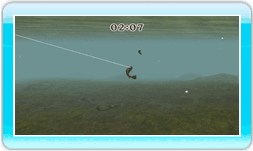

14 |
La Lutte |
 |

Lorsque le poisson mord à l'hameçon, c'est le moment de prouver qui est le plus fort ! Les poissons peuvent agir de 3 manières durant la lutte : Le Repos : Lorsqu'un poisson est au repos, il nage à vitesse normale, c'est-à-dire lentement. C'est votre chance de le ramener plus près, alors moulinez le plus rapidement possible ! Assurez-vous de tenir la télécommande Wii à plat. Si vous tenez la télécommande Wii vers le haut tout en moulinant, ça ajoutera un peu plus de tension à votre ligne et ça peut éventuellement la casser ! Le Combat : Lorsque le poisson commence à résister, la télécommande Wii vibre plus intensément et le poisson se tortille de tout son long. Dans ce cas-là, arrêtez de mouliner et tenez votre télécommande Wii vers le haut. Ne moulinez jamais en ayant la télécommande Wii vers le haut. Votre ligne se cassera à cause de la tension soudaine. Ne tenez pas non plus la télécommande Wii à plat : la ligne sera mal tendue et l'hameçon se décrochera. La Fuite : Lorsqu'un poisson tente de s'enfuir, la télécommande Wii émettra de petites vibrations soutenues et le poisson nagera rapidement. Dans ce cas-là, tenez la télécommande Wii à plat et moulinez rapidement. Ceci permettra de réduire la tension de votre ligne et éviter qu'elle se casse. Assurez-vous de ne pas tenir la télécommande Wii vers le haut alors que vous moulinez : la tension accrue cassera votre ligne. |
 |
 |
 |